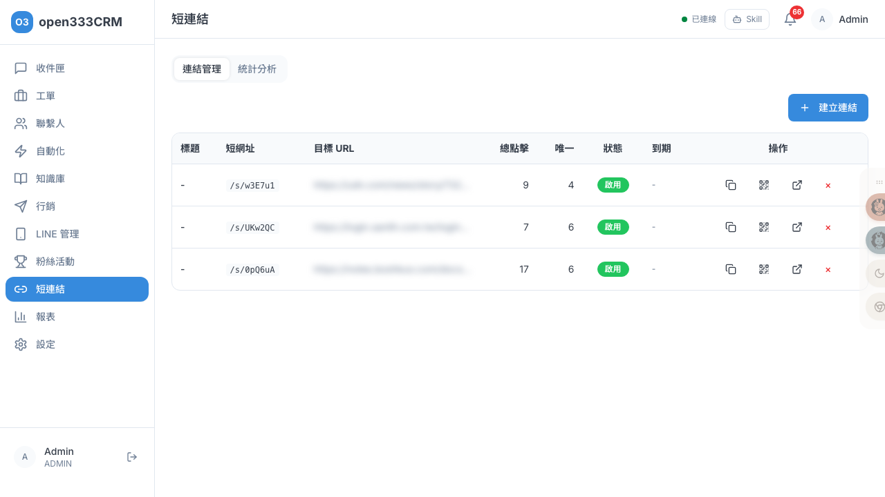
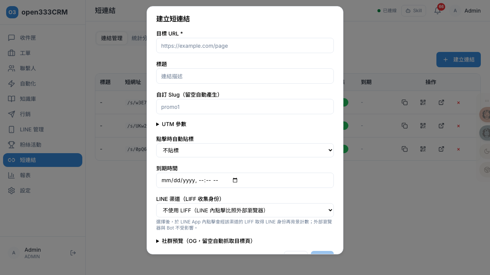

CHAPTER 09 · 行銷與活動
短連結
把長網址縮成可追蹤的短網址，支援 UTM 參數、點擊自動貼標、到期時間與 LINE 身份收集，並產生 QR Code、分析點擊來源與成效。
1 功能總覽
短連結把長網址縮成 /s/{代碼} 的短網址。它不只是縮短——每次有人點，系統會記錄「誰點的、從哪來、點幾次」，還能在點擊時自動幫這個人貼標籤。兩個分頁：連結管理、統計分析。
2 連結管理
「連結管理」以表格列出所有短連結。

| 欄位 | 說明 |
|---|---|
| 標題 / 短網址 | 連結描述與 /s/{代碼}（可一鍵複製完整網址） |
| 目標 URL | 導向的原始網址 |
| 總點擊 / 唯一 | 總點擊數與去重後的唯一點擊數（差異見第 4 節） |
| 狀態 / 到期 | 啟用 / 已過期 / 停用；到期時間 |
| 操作 | 複製 URL、QR Code、編輯、刪除 |
3 建立短連結
點「建立連結」開啟對話框。只有「目標 URL」是必填，其餘都是強化追蹤與行銷的選項。

| 欄位 | 必填 | 說明與運作方式 |
|---|---|---|
| 目標 URL | ✓ | 要縮短的原始網址 |
| 標題 | 只給自己看的描述 | |
| 自訂 Slug | 只有新建時可填，留空系統自動產生；撞號會提示已被使用 | |
| UTM 參數 | 五個參數（source/medium/campaign/content/term），跳轉時自動接到目標網址，讓 GA/廣告後台分辨流量來源 | |
| 點擊時自動貼標 | 選一個標籤，系統認得出點擊者身份時才會貼到該客戶身上（同標籤不重複貼） | |
| 到期時間 | 過期後連結失效，點擊會看到過期頁 | |
| LINE 渠道（LIFF） | 選了後，在 LINE App 內點擊會取得 LINE 身份再計數（需該渠道已設 LIFF App ID） | |
| 社群預覽（OG） | 三個全空時系統自動抓目標頁的預覽；填了就用手填值 |
ℹ️
「社群預覽」控制的是：把短連結貼到 LINE / FB 時，聊天室跑出的那張預覽卡（標題、描述、縮圖）。留空會自動抓目標頁，填了以手填為準。
4 點擊怎麼被計算
這是短連結最需要理解的部分——不是每次打開都算一次點擊。系統會依「誰在打開」分四種情況處理：
| 情況 | 怎麼處理 |
|---|---|
| 社群預覽爬蟲 （LINE/FB 產生預覽卡） | 不算點擊、不記錄——你把連結貼到群組、對方還沒點只是出現預覽卡，那次不算 |
| 一般瀏覽器 | 背景計一次點擊後，幾乎無感地秒跳目標頁 |
| LINE App 內開 | 若連結綁的 LINE 渠道有設 LIFF，會取得 LINE 身份再計數（認得出是誰）；沒設 LIFF 就比照一般瀏覽器 |
| FB/IG 內開 | 目前比照一般瀏覽器 |
總點擊 vs 唯一點擊
- 總點擊：每次點都 +1。
- 唯一點擊：認得出身份時（有 LINE 身份）用身份去重——同一個 LINE 用戶不管點幾次都只算一個唯一；認不出身份時，每次點都算一個新的唯一（因為無法辨識是不是同一人）。
✨
想讓「唯一點擊」和「自動貼標」真的準，關鍵是透過 LINE LIFF 收集身份——建立連結時選 LINE 渠道，並確保該渠道在設定裡填了 LIFF App ID。這樣才認得出「誰點了」，統計的「識別率」才會高。
5 QR Code
每個短連結都可產生 QR Code。在列表點 QR Code 圖示開啟對話框，系統會產一張 400×400 的黑白 PNG，可「下載」成 qr-{標題}.png，用於印刷文宣、海報。掃描 QR Code 等同點短連結，一樣會計入統計。
6 統計分析
「統計分析」分頁選一個連結後，顯示三個指標：
| 指標 | 意義 |
|---|---|
| 總點擊 / 唯一點擊 | 如第 4 節說明 |
| 識別率 | 認得出是誰的點擊佔全部的比例——代表「多少比例的點擊我知道是哪位客戶」 |
並有兩張圖：每日點擊趨勢（總點擊 vs 唯一點擊，近 30 天）、來源分布（依來源分組，取前 10 名；沒有來源的算「direct」）。
ℹ️
短連結的點擊數據可同步到 GA4 與 Meta Pixel——只要在「設定 → 追蹤設定」填入對應 ID，短連結的中轉頁就會自動注入追蹤腳本（見「11 · 系統設定」）。